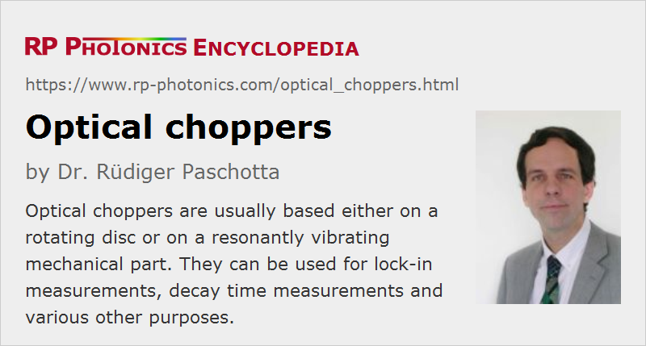

Optical Choppers
Definition: devices for periodically interrupting light beams
German: Optische Chopper
How to cite the article; suggest additional literature
Author: Dr. Rüdiger Paschotta
There are different kinds of optical chopper devices which can be used for periodically transmitting and interrupting a light beam – for example, a laser beam – with mechanical means. Usually, they are used for periodically modulating the optical power of a beam. See below for some examples of applications.
The simple mechanical operation principle – letting a beam pass or block it with some blade – makes such devices work for basically any optical wavelength, and beam distortions in the open state are avoided. This is in contrast to the use of various kinds of intensity modulators, which may exhibit incomplete transmission, beam distortions, effects of nonlinearities etc. Also, simple mechanical choppers can be far cheaper than electronically controlled modulators. On the other hand, mechanical choppers are limited in frequency and switching speed, and they output partially truncated beams during the switching. Besides, they may produce disturbing mechanical vibrations of an optical setup.
Rotating Disc Choppers
The most common form of optical chopper is that of a rotating disc chopper. Its central part is a chopper disc (also called chopper blade) which is typically made of a black coated metal, having the shape of a circle with some pattern of holes or slits (slots). The wheel is driven by a small electric motor.
As shown in Figure 1, there can be two (and rarely more) rows of slits, often with different numbers of holes, so that different chopping frequencies can be achieved with a given rotation frequency. Due to the integer frequency ratios, the term harmonic blades is sometimes used, or otherwise dual frequency blades. Normally, the outer row has the highest number of slits. Some applications involve the simultaneous use of both rows with dual beams, typically with a frequency ratio of 2.
For some applications, it is important that the coating of a chopper disc is made such that it causes only a minimum amount of light scattering. Problems with scattered light may also be greatly reduced with an appropriate enclosure. In other cases, it is important that the wheel can withstand substantial optical intensities and powers.
The switching speed depends on the beam radius and the rotation frequency. For maximum switching speed, as required for some applications, one can use a tightly focused beam. This can be problematic, however, for beams with high optical power due to the concentrated deposition of heat to the wheel surface. In such cases, one may prefer to use a wheel with a lower number of slits, operated with accordingly higher rotation frequency and a larger beam diameter. On the other hand, chopper discs with hundreds of slits are used to obtain very high chopping frequencies (e.g. 10 kHz) without requiring excessive rotation frequencies.
Often, it is possible to exchange the chopper disc in order to adapt the device to different operation needs. Some suppliers ofter a wide selection of chopper blades with different numbers of slits, single or multiple rows, different duty cycles, outer diameters etc.
During the switching, one obtains a beam with modified beam profile and possibly some effects of diffraction; this may be relevant for some applications.
For precise control of the rotation frequency, one ideally uses a synchronous alternating current motor; the rotation frequency can then be exactly controlled via the electrical drive frequency. Alternatively, one may use some electronic feedback loop, e.g. involving a phase-locked loop (PLL) and stable quartz-based frequency synthesizer for high frequency stability. A low timing jitter may also be achieved, if in addition the mechanical setup is rigid and stable, e.g. avoiding oscillations of the rotating wheel, and the motor is of high quality. High precision chopping devices may reach very high accuracy despite the mechanical operation principle. Note, however, that minimum timing jitter may be achieved only for limited rotation speeds, well below the maximum allowable speed.
Some choppers work with a fixed and rather stable frequency, while others offer a variable frequency. In the latter case, the chopper wheel driver may allow the adjustment of rotation frequency with an adjustment knob or alternatively with an external DC voltage, but there can also be a digital interface for more precise control. For convenience, there may be a digital frequency display on the front panel.
The driver may also provide a reference output signal (e.g. with a TTL format) which is synchronous with the chopping; it may be derived from the drive frequency of the motor or, in case of a DC motor, obtained with an additional optical sensor (typically a light barrier) at the wheel. It may be used as a reference input for a lock-in amplifier, for example. Some devices are able to deliver harmonics or sub-harmonics of the reference signal and/or adjustment of the phase.
Additional mechanical accessories may be useful, for example mounting plates and housings (enclosures) for blocking unwanted light. Mounts may have to be optimized such as to minimize the transfer of vibrations to the base plate.
Tuning Fork Choppers
Another operation principle of an optical chopper is based on a resonant mechanical vibration, which is excited with an electromagnet. The vibrating part contains a blade which moves into and out of the light beam. Such devices are mechanically simple. However, they can usually be operated only with a fixed frequency, since a sufficiently high oscillation amplitude is achieved only around the mechanical resonance frequency. Also, the light beam must be positioned more accurately due to the limited vibration amplitude of the blade.
Beam Shutters
There are also various kinds of beam shutters which do not necessarily operate periodically, but can be controlled with a voltage signal, which may be periodic or not. In that sense, they are more flexible. On the other hand, they are typically much more limited in terms of the maximum switching frequency, also in terms of the number of switching cycles. Therefore, they are not common for periodic dropping, particularly not at high frequencies.
Typical Applications of Optical Choppers
Lock-in Detection
A typical application of choppers is to do sensitive measurements of optical powers involving lock-in amplifiers, e.g. in the context of spectroscopy. Instead of directly measuring the optical power with some photodetector, one registers an oscillating power of a chopped beam. The lock-in amplifier can then very sensitively detect that modulation and can, if required, also determine its phase. Particularly good signal-to-noise ratios are achieved for high chopping frequencies, which however are limited with mechanical types of choppers. Influences of background light can be easily eliminated with such techniques.
Measuring Fluorescence Decay Times
With chopped laser beams, it is possible to measure certain decay times – for example, the upper-state lifetime of a laser gain medium. One simply exposes a piece of the medium to the chopped beam and registers the time-dependent power of the fluorescence. Although switching speeds of mechanical chopper devices are limited, they can easily be sufficient for measuring decay times of the order of milliseconds or somewhat less, if a suitably focused beam is used at the blade.
Reducing Average Powers
Choppers with a small duty cycle may be useful for experiments where the average power of the continuous beam would be too high for some system. For example, one may test a laser which would overheat for continuous pumping.
Rotation Detection
Chopper discs can also be used for optical sensors, detecting rotation speeds. For example, an anti-lock braking system of a car may use it for checking whether the brake is about to completely stop a wheel.
Suppliers
The RP Photonics Buyer's Guide contains 10 suppliers for optical choppers. Among them:
Questions and Comments from Users
Here you can submit questions and comments. As far as they get accepted by the author, they will appear above this paragraph together with the author’s answer. The author will decide on acceptance based on certain criteria. Essentially, the issue must be of sufficiently broad interest.
Please do not enter personal data here; we would otherwise delete it soon. (See also our privacy declaration.) If you wish to receive personal feedback or consultancy from the author, please contact him e.g. via e-mail.
By submitting the information, you give your consent to the potential publication of your inputs on our website according to our rules. (If you later retract your consent, we will delete those inputs.) As your inputs are first reviewed by the author, they may be published with some delay.
See also: beam shutters, optical modulators, intensity modulators
and other articles in the category photonic devices
|  |
If you like this page, please share the link with your friends and colleagues, e.g. via social media:
These sharing buttons are implemented in a privacy-friendly way!